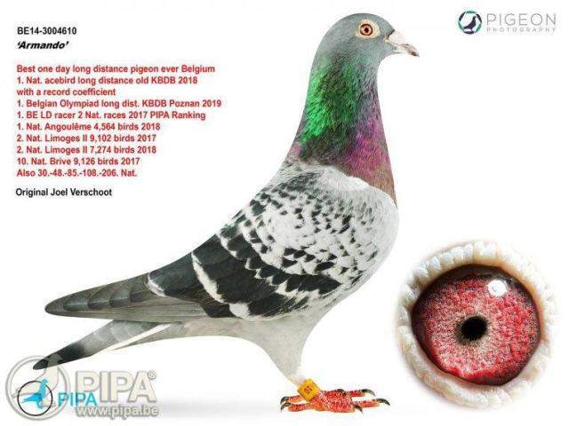

Pasiunea pentru porumbei voiajori – un mod de viață în columbofilie
Columbofilia nu este doar un hobby, ci o adevărată artă, o tradiție care
leagă generații de iubitori de porumbei. De-a lungul timpului, aceste păsări
extraordinare au devenit simboluri ale vitezei, inteligenței și loialității, captivând inimile
fiecărui columbofil.
Participarea la competiții este una dintre cele mai mari provocări și satisfacții
pentru un columbofil. Pregătirea porumbeilor necesită multă muncă, atenție și, desigur,
cele mai bune accesorii porumbei, de la hrană de calitate la inele de identificare. Un antrenament
bine gândit poate face diferența între un campion și un simplu participant.
Pentru a avea cei mai valoroși porumbei, mulți pasionați participă la licitații, unde
pot achiziționa păsări cu un pedigree impresionant. Aceste evenimente sunt adevărate puncte de întâlnire pentru
comunitatea columbofilă, oferind ocazia de a învăța unii de la alții și de a descoperi exemplare de excepție.
Armando, cel mai scump porumbel din istorie

Armando supranumit "Cristiano Ronaldo" in lumea porumbeilor voiajori
a fost vandut la licitatie in anul 2019 pentru suma record de 1,25 milioane de euro.
Acesta a obtinut multiple titluri la curse de fond si maraton in Belgia.
Tipurile de competitii pentru porumbei voiajori
În columbofilie, competițiile de porumbei voiajori sunt împărțite în mai multe categorii, în funcție de distanța parcursă. Iată o descriere scurtă pentru fiecare dintre cele patru principale:
Viteza(100-300 km)
Este cea mai scurta si rapida categorie. Aici se pune accent pe explozia de start si orientarea rapida.
Potrivita pentru porumbeii tineri sau debutanti.
Demi-fond(300 - 500 km)
O competitie in care se imbina viteza cu rezistenta. Necesita antrenamente mai intense si o conditie fizica
mai buna. Populara in randul columbofililor datorita echilibrului dintre distanta si dificultate.
Fond(500 - 800 km)
Testeaza anduranta si strategia porumbelului. Conditiile meteo devin un factor important.
Porumbeii de fond trebuia sa aiba o recuperare rapida intre etape.
Maraton(800 - 1200+ km)
Cea mai dura categorie, rezervata celor mai puternici porumbei.
Dureaza de obicei mai multe zile, iar porumbeii trebuie sa aiba o rezistenta exceptionala.
Necesita o selectie genetica riguroasa si o pregatire de lunga durata.
Calendar evenimente
15 Mai 2025 - Expoziție internațională de porumbei - București
24 Iunie 2025 - Concurs național de viteză - Cluj
10 Iulie 2025 - Campionat de maraton - Timișoara
20 August 2025 - Licitație porumbei de elită - București
Întrebări frecvente despre columbofilie
Ce este columbofilia?
Columbofilia este hobby-ul de a crește, antrena și participa la competiții cu porumbei voiajori. Acest hobby implică îngrijirea porumbeilor, antrenarea lor pentru a se întoarce acasă de la distanțe mari și, în multe cazuri, participarea la competiții organizate.
Cum pot începe să practic columbofilia?
Pentru a începe în columbofilie, este recomandat să:
Contactezi un club columbofil local pentru îndrumare
Construiești sau achiziționezi un porumbar adecvat
Achiziționezi câțiva porumbei de calitate de la crescători cu experiență
Anunțuri importante
Nou în ofertă!
Porumbei din linia campionului european disponibili pentru achiziție.
Promoție!
20% reducere la toate accesoriile pentru porumbei până pe 15 mai.
Curs de inițiere
Înscrieri deschise pentru cursurile de inițiere în columbofilie.
Utilizatori online
AlexColumbo - Expert
MariaB - Începător
IonP - Administrator
GeorgeT - Membru
ElenaR - Expert
Pachete pentru începători
Pachet BASIC - REDUCERE 20%
Pentru cei care doresc să înceapă acest hobby, oferim:
2 perechi de porumbei tineri
Set complet de hrană pentru 1 lună
Manual de inițiere
Preț pachet: 150€
Statistici utilizator
Vizite site: 1240
Utilizatori înregistrați: 358
Porumbei în ofertă: 145
Tranzacții în ultimele 30 zile: 27
Sfaturi pentru îngrijirea porumbeilor
Regim alimentar recomandat
Nutriția corectă este esențială pentru sănătatea și performanța porumbeilor voiajori:
În sezonul de repaus: Amestec de cereale cu conținut moderat de proteine (12-14%)
În perioada de reproducere: Amestec bogat în proteine (16-18%) și suplimente de calciu
Informații server
Versiune site: 2.4.1
Ultima actualizare: 5 aprilie 2025
Timpul de răspuns: 0.46s
Stare server: Funcțional
Porumbei celebri și recorduri
Recorduri de preț în licitații
În ultimii ani, prețurile pentru porumbeii de elită au atins valori record:
Armando - 1,25 milioane € (2019, Belgia)
New Kim - 1,6 milioane € (2020, Belgia)
Noutăți din lumea columbofilă
Sorin Cotîrlă – Un nume de referință în columbofilia clujeană
Pentru Sorin Cotîrlă, din localitatea Copăceni, județul Cluj, columbofilia nu este doar un hobby,
ci o moștenire de familie transformată într-o adevărată artă a competiției.
Membru activ al Clubului „Mihai Viteazul" Turda,
Sorin s-a impus în lumea curselor de porumbei prin curajul de a risca și prin ambiția de a concura la
cele mai solicitante categorii – Maraton și Extrem.
Andrei Cornici – Un tânăr maratonist cu rezultate de excepție în sezonul 2024
În localitatea Sânmărghita, județul Cluj, pasiunea pentru columbofilie se transmite din
generație în generație, iar Andrei Cornici este dovada vie a acestui fapt. Membru activ
al Clubului Dej din 2016, Andrei a început să-și construiască drumul spre performanță încă
din 2018, când a obținut primele rezultate notabile la nivel județean.
{kind=link}